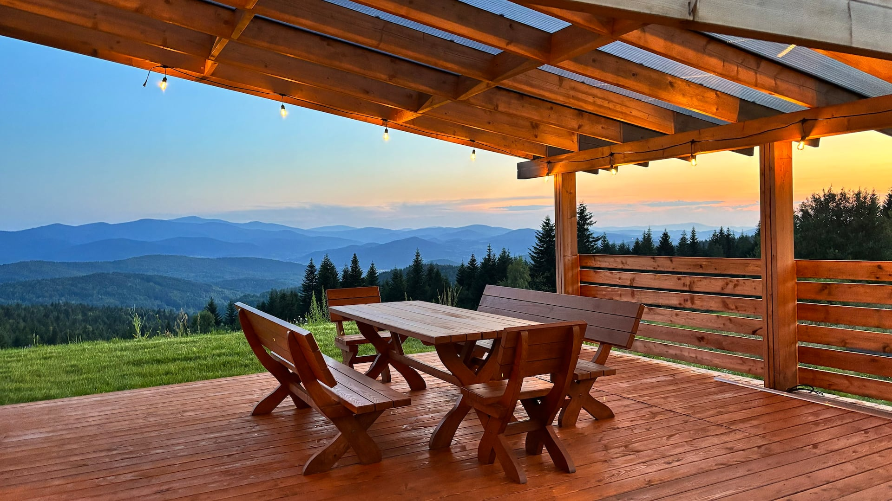
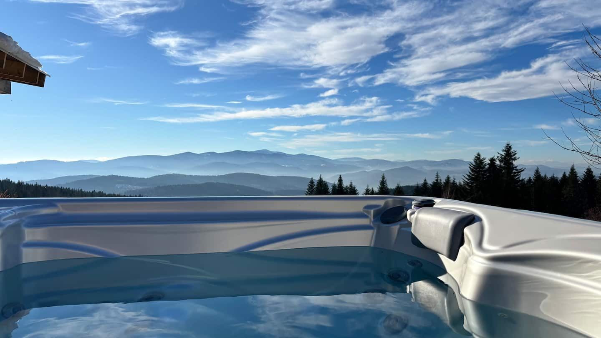

★★★★★Airbnb ↗
Powrót po więcej spokoju
Drugi pobyt, zachody słońca z jacuzzi i przytulny, dobrze wyposażony dom. Fanni doceniła też sprawny kontakt z gospodarzami.
SPA I WIDOKITwój własny kawałek gór.
Dom z panoramicznym widokiem
i spa pod otwartym niebem.

Na zboczu Koskowej Góry czeka dom, w którym można po prostu być. Z kawą na tarasie, książką przy kominku i górami, które nie potrzebują żadnego filtra.
Naturalne drewno, ciepłe wnętrza i 2300 m² prywatnej przestrzeni. Dla Was dwojga, całej rodziny albo kilku bliskich osób. Na weekend lub na dłuższy oddech.
ponad codziennością
przestrzeni dla siebie
osób — razem z Tobą
powodów, by zostać dłużej
Ciepła woda, świeże górskie powietrze i panorama, od której trudno oderwać wzrok. Prywatne spa na świeżym powietrzu — o każdej porze roku.

RESET. NATURALNIE.Bogdanówka. Zbocza Koskowej Góry. Lasy, górskie szlaki i panorama Beskidu Wyspowego oraz Tatr. Tutaj plan dnia może kończyć się na „idziemy przed siebie”.
Odkryj okolicę na mapie ↗Mapa pokazuje okolicę. Dokładny adres otrzymasz po rezerwacji.
Spacery, leśne ścieżki i chwile z dala od zgiełku.
Elektryczne rowery górskie Scott do wynajęcia. Dostępność i cenę ustalisz z gospodarzem.
Ognisko, grill albo ulubiona książka na tarasie.
Drugi pobyt, zachody słońca z jacuzzi i przytulny, dobrze wyposażony dom. Fanni doceniła też sprawny kontakt z gospodarzami.
SPA I WIDOKIMelli chwali czystość, przestronny ogród dla psa, spokojną okolicę i widoki. Szczególnie zapamiętała jacuzzi o zachodzie słońca.
POBYT Z PSEMCzytanie w hamaku, gry na tarasie i gwiazdy oglądane z jacuzzi. Katharina doceniła wnętrza oraz panoramę towarzyszącą codziennym chwilom.
CZAS DLA SIEBIETobias wyróżnił ustronne położenie, idealną czystość i świetną komunikację z gospodarzem. Chętnie przyjechałby ponownie.
SPOKÓJ I GOŚCINNOŚĆLukasz poleca widok z tarasu, spa i nowoczesne wyposażenie. Wspomina ogrzewanie podłogowe, kącik dziecięcy oraz pomocnego gospodarza.
RODZINNY WYPOCZYNEKRita opisuje piękne miejsce z niezwykłą panoramą, w którym można naprawdę odpocząć. Docenia przygotowanie domu do komfortowego pobytu.
BLISKO NATURYWybrane opinie — skróty redakcyjne w języku polskim, nie dosłowne cytaty. Oceny i liczba opinii sprawdzone na Airbnb 29.09.2026.
Dom jest przeznaczony dla maksymalnie 5 gości. Na piętrze znajduje się łóżko king-size, rozkładana sofa i łóżeczko dziecięce. W salonie jest dodatkowa rozkładana sofa. Do dyspozycji gości jest jedna łazienka.
Tak. Prywatna wanna spa na świeżym powietrzu jest dostępna przez cały rok. Mieści 5 osób i ma 2 miejsca do masażu.
Tak, zgodnie z ogłoszeniem zwierzęta są mile widziane. Dodaj pupila podczas rezerwacji na Airbnb i sprawdź obowiązujące warunki oraz ewentualne opłaty.
Przyjazd jest samodzielny — klucze czekają w skrytce. Instrukcje, dokładny adres i godziny zameldowania otrzymasz od gospodarza. Na zewnątrz obiektu znajdują się kamery monitoringu.
Wynajem rowerów elektrycznych oraz ładowanie samochodu (Type 2, 11 kW) są usługami dodatkowymi. Ceny i dostępność potwierdź u gospodarza. Końcową cenę pobytu i zasady anulowania sprawdzisz na Airbnb.
Wybierz daty. Resztę zostaw górom.